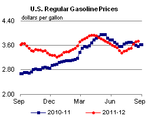
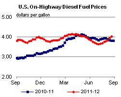
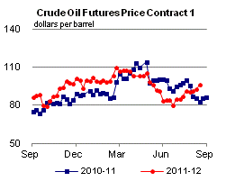
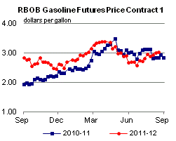
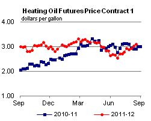
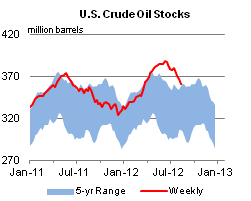
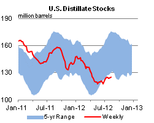
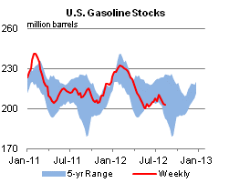
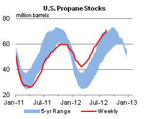

Released: August 22, 2012
Next Release: August 29, 2012
An Update on West Coast Gasoline Markets
Between August 6 and August 13, the price of retail regular grade gasoline on the West Coast (PADD 5) increased 19 cents per gallon, well above the 8-cent-per-gallon increase for the United States as a whole. While rising global crude oil prices have pushed gasoline prices higher nationwide, an August 6 fire at Chevron's Richmond, California refinery placed added pressure on West Coast prices. After an initial increase of 32 cents per gallon on August 7, spot prices in Los Angeles for California-specification Reformulated Blendstock for Oxygenate Blending (CARBOB) have fallen 18 cents per gallon to $3.09 per gallon on August 21, a discount to similar prices in New York Harbor (Figure 1). Although press stories indicate that the crude distillation unit at the Richmond refinery is expected to remain offline for four to six months, reports that gasoline-producing units at the Richmond refinery will continue to run using gasoil feedstocks transported from other sources, along with news that other West Coast refineries were increasing gasoline production, appear to have mitigated its impact on wholesale gasoline prices. This situation contrasts with that following the earlier outage at BP's Cherry Point, Washington refinery, when CARBOB traded at a large premium to gasoline in New York Harbor for an extended interval.
{kind=link}
The price response to both the Richmond and Cherry Point outages highlights the special sensitivity of the West Coast gasoline market to supply disruptions. Unlike other U.S. markets, which are interconnected by pipelines and river systems, the West Coast liquid fuels market is relatively isolated and largely supplied by in-region refinery production. Through May of this year, West Coast refinery production supplied 80 percent of the almost 1.5 million barrels per day (bbl/d) of gasoline consumed in the region (Figure 2). Additionally, while there are 23 refineries in PADD 5 (exclusive of Hawaii and Alaska), and 2.6 million bbl/d of operable refinery capacity, four large refineries, each with an operable capacity greater than 200,000 bbl/d, account for almost 40 percent of the region's total crude oil distillation capacity. Both the Richmond and Cherry Point refineries are in this group. Assuming a typical gasoline yield of about 50 percent, an outage at a 245,000-bbl/d refinery (the average size of the four biggest West Coast refineries) has the potential to remove more than 120,000 bbl/d of gasoline from the market. Given that the West Coast market depends heavily on in-region production, and given that a small number of large refineries contribute major shares of that production, a single unplanned refinery outage can have a dramatic impact on supply.
{kind=link}
In addition, because of the relative isolation of the West Coast market, it can be costly to supplement supply from outside the region when a refinery outage occurs. Unlike other gasoline markets in the United States, the West Coast market does not receive or ship significant volumes of gasoline to or from other U.S. regions or abroad. Year-to-date through May in 2012, gasoline volumes shipped to the West Coast from other regions of the United States averaged about 130,000 bbl/d, or 9 percent of total regional supply. Most of this was shipped from the Gulf Coast via pipeline into Arizona; some additional barrels are shipped from the Rocky Mountain region. East of the Rockies, petroleum product markets are connected via extensive pipeline systems. These pipelines allow refineries on the Gulf Coast to efficiently ship additional products to the East Coast and Midwest to balance those markets when supply disruptions occur. In addition, the West Coast market is distanced from the actively traded physical markets in the Atlantic Basin, where price signals can divert cargoes in transit to locations where they are needed.
During a major refinery outage on the West Coast, one of the first sources of supply on which the market draws is likely to be reduced exports of gasoline. Gasoline exports from the West Coast have averaged just over 35,000 bbl/d year-to-date through May in 2012, but were as high as 90,000 bbl/d earlier in August 2011. The majority of exports from the region are shipped from San Francisco, and Mexico is the largest importer of West Coast gasoline. However, an increase in wholesale prices is necessary to bid this formerly-excess supply back into the domestic market and out of the export market.
Attracting imports also tends to be an expensive solution for supplying West Coast markets. The small stream of regular imports into the West Coast comes mainly from Canada. Occasionally, tight market conditions can open an arbitrage with Asia, but this happens only when prices are high enough to cover the cost of shipping products across the Pacific. This did happen earlier this year, when price differentials supported trans-Pacific trade and the West Coast pulled gasoline cargoes from South Korea and Singapore, among others. However, imports remain a small part of the region's supply, averaging 26,000 bbl/d in 2012, making up only about 2 percent of total supply.
Unique specification requirements for gasoline, particularly in California, also complicate bringing supplies into the region. California gasoline has a stringent Reid Vapor Pressure limit during the summer months, which California's refineries are designed to meet. However, domestic and global availability of gasoline meeting this specification is limited, making it difficult to find supplies, especially on short notice.
During prolonged refinery outages, like the Cherry Point shutdown that lasted from late February through May, West Coast gasoline inventories often fall sharply because of the difficulty in securing supplemental supplies. After the Cherry Point shutdown, West Coast gasoline stocks fell 22 percent (6.8 million barrels) between February 17 and May 18. This inventory reduction was much larger than the 1.9-million-barrel draw typically seen in West Coast stocks over this period. However, stock draws do not obviate the need for higher wholesale prices to attract supplies
Gasoline and diesel fuel prices continue to climb
The U.S. average retail price of regular gasoline increased two cents this week to $3.74 per gallon, 16 cents per gallon higher than last year at this time. The largest increase came on the Gulf Coast, where the price is up six cents to $3.55 per gallon. The West Coast price is up five cents to $4.00 per gallon. The last time the West Coast price was at or above the $4-per-gallon mark was the week of June 11, 2012. In the Rocky Mountain region the average price is now $3.54, up four cents from last week, while on the East Coast the price is $3.71, up three cents from last week. Rounding out the regions, and going against the trend, the Midwest price declined three cents to $3.76 per gallon.
The national average diesel fuel price increased six cents to $4.03 per gallon, 22 cents per gallon higher than last year at this time. The last time the average U.S. diesel price was at or above $4 per gallon was the week of May 14, 2012, and prices are now above that mark in all regions except the Gulf Coast. Prices increased in all regions of the Nation, with the largest increase coming on the West Coast and in the Rocky Mountain region, each of which had prices increase ten cents, to $4.25 per gallon and $4.06 per gallon, respectively. The Gulf Coast price increased six cents to $3.91 per gallon. On the East Coast, the price is now $4.01 per gallon, up five cents from last week. Rounding out the regions, the Midwest price also increased five cents, to reach $4.02 per gallon.
Propane stocks show a sizeable build
Last week, total U.S. inventories of propane continued their seasonal growth by adding 1.9 million barrels of new stocks to end at 70.9 million barrels, 18.9 million barrels (36 percent) higher than a year ago. The Gulf Coast received the largest build of 1.5 million barrels. Meanwhile, Midwest regional inventories grew by 0.4 million barrels, the Rocky Mountain/West Coast region added 0.1 million barrels, and East Coast regional stocks grew slightly. Propylene non-fuel-use inventories represented 7.3 percent of total propane inventories.
Text from the previous editions of This Week In Petroleum is accessible through a link at the top right-hand corner of this page.
|  |  | ||||||
| Retail Data | Change From Last | Retail Data | Change From Last | ||||
| 08/20/12 | Week | Year | 08/20/12 | Week | Year | ||
| Gasoline | 3.744 | Diesel Fuel | 4.026 | ||||
|  |  | ||||||||||||||||||||||||||
|
 | ||||||||||||||||||||||||||
| *Note: Crude Oil Price in Dollars per Barrel. | |||||||||||||||||||||||||||
|  |  | ||||||
|  |  | ||||||
| Stocks Data | Change From Last | Stocks Data | Change From Last | ||||
| 08/17/12 | Week | Year | 08/17/12 | Week | Year | ||
| Crude Oil | 360.7 | Distillate | 125.2 | ||||
| Gasoline | 202.7 | Propane | 70.942 | ||||